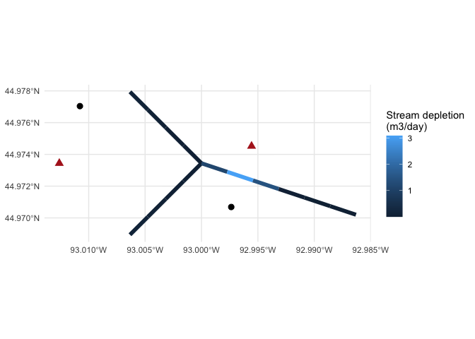

isw prepares stream networks and models stream depletion and aquifer water-level change caused by groundwater pumping. Its main workflow separates physical stream segments from pump-specific apportionment and supports both analytical depletion-function (ADF) and constant-head stream injection.
Install the development version from GitHub:
# install.packages("remotes")
remotes::install_github("gopalpenny/isw")This example uses the spatial data included with the package.
library(isw)
library(units)
stream_segments <- prep_stream_segments(
example_stream_reaches,
reach_spacing = set_units(200, "m")
)
stream_apportionment <- prep_adf_stream_apportionment(
example_pumping_wells,
stream_segments,
sample_spacing = set_units(50, "m")
)
pumping_schedules <- tibble::tibble(
t = set_units(c(0, 30, 60), "days"),
pump_1 = set_units(c(400, 400, 0), "m^3/day"),
pump_2 = set_units(c(0, 250, 0), "m^3/day")
)
evaluation_times <- set_units(c(0, 30, 60, 90), "days")
stream_depletion <- model_adf_stream_depletion(
example_pumping_wells,
pumping_schedules,
stream_apportionment,
evaluation_times
)
water_level_change <- model_aquifer_water_level_change(
example_pumping_wells,
pumping_schedules,
example_observation_wells,
stream_segments,
evaluation_times,
stream_apportionment = stream_apportionment
)The map shows the total modeled stream-depletion rate at day 60. Pumping wells are red triangles and observation wells are black points.
depletion_map <- stream_depletion |>
dplyr::filter(evaluation_time == set_units(60, "days")) |>
dplyr::group_by(reach_id, reach_segment_id) |>
dplyr::summarize(
depletion_m3_day = as.numeric(set_units(
sum(stream_depletion_rate),
"m^3/day"
)),
.groups = "drop"
)
plot_segments <- dplyr::left_join(
stream_segments,
depletion_map,
by = c("reach_id", "reach_segment_id")
)
ggplot2::ggplot() +
ggplot2::geom_sf(
data = plot_segments,
ggplot2::aes(color = depletion_m3_day),
linewidth = 2
) +
ggplot2::geom_sf(
data = example_pumping_wells,
color = "firebrick",
shape = 17,
size = 3
) +
ggplot2::geom_sf(
data = example_observation_wells,
color = "black",
size = 2.5
) +
ggplot2::labs(color = "Stream depletion\n(m3/day)") +
ggplot2::theme_minimal()
See the package workflow for ADF and constant-head examples, and the function reference for complete input and output descriptions.